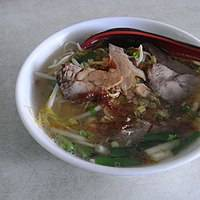
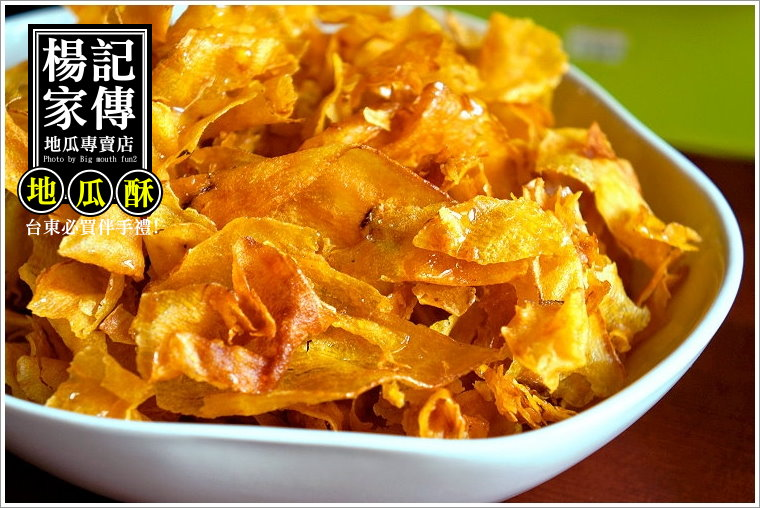

花蓮玉里麵
玉里麵，原名玉里大麵，臺灣地方麵食，因發源自花蓮縣玉里鎮而得名，其發展僅現存於玉里鎮。
相傳是源於日治時期，由於日本人愛吃拉麵，便將麵食文化帶進玉里，並結合在地食材，開啟了玉里人的麵食歷史[3]。後來，中國大陸一位福州師傅，隨著中華民國政府遷臺而來到玉里擺攤開館，賣起了一種外形與油麵相似的大麵，受到許多工人食用後，其口感是麵條彈牙有嚼勁，因此名聲大噪下，於是當地人將它稱為「玉里麵」。

台東楊記地瓜酥
民國五十年代，楊記家傳第一代的楊振發，總是踩著一輛飄散著地瓜香氣的三輪車，穿梭在台東市熱鬧的巷弄之間，沿途叫賣：「番薯喔！」攤車上擺滿一盤盤金黃琥珀色的地瓜蜜、薄脆的地瓜酥，還有木箱子裡那熱騰騰的香烤地瓜。即使到現在，依舊是深印在老一輩的台東人的記憶畫面。
